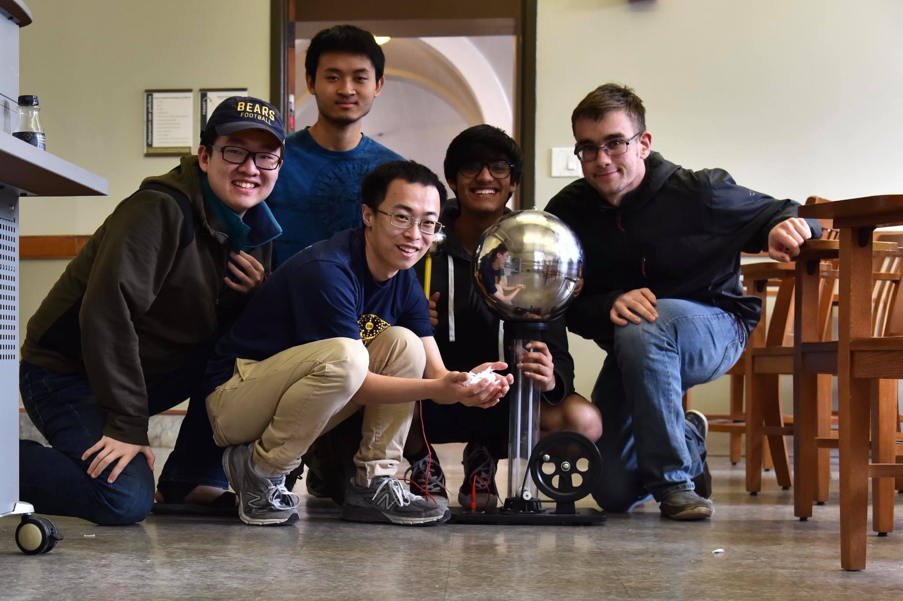

Outreach
In order to indoctrinate our youth in the gospel of physics, SPS either hosts or participates in a variety of outreach events that our members can participate in. These provide a great way to give back to the community and share our enthusiasm for science with the public! For information on upcoming outreach events, please see the calendar or check out our Facebook page. Below are a list of outreach events that we have done in the past as well as pictures.
Feel free to contact Rahul Sahay, at rsahay “at” berkeley “dot” edu, with any questions regarding outreach with SPS.
Past Outreach Events
Day in the Life of a STEM Undergraduate (10 December 2018)
SPS partnered up with the TriO collaboration associated with DSP, in order to host a “Day in the Life of a STEM Undergraduate” event aimed at underrepresented high school students who were potential first generation college students. The event featured Berkeley professors Matt Pyle and Bob Jacobsen and included lab tours of the Siddiqi and Mueller Labs! In addition, the day ended with a panel of SPS members who shared there experiences as students in STEM!


Bay Area Science Festival (3 November 2018)
With the help of Science@Cal, SPS headed to AT&T Park in San Francisco to demonstrate various physics concepts to kids of all ages for the annual Bay Area Science Festival. Due to our involvement in previous years, this year we were given a special location in the festival known as the “Teen Scene” (where we engaged teens and non-teens alike). This event is always a lot of fun and tends to be the largest outreach event of the semester!


Calapalooza (30 August 2018)
Calapalooza is Berkeley's annual "club fair". As a club at UC Berkeley, we participated, of course! We demonstrated some cool physics concepts despite limited space and were able to meet some really cool physics enthusiasts!


Cal Day (13 April 2018)
Cal Day is an annual event intended to show off the various departments at Berkeley to prospective students! We played a relatively large role for the Physics department this year. We provided volunteers for demonstrating physics concepts and were able to share our personal experiences in Physics with prospective students!


Engineering 4 Kids Day (17 March 2018)
Despite being affiliated with engineers (sue us), Engineering 4 Kids Day (or E4K Day) is an awesome outreach event in which elementary school students from around the Bay come to Berkeley to get a taste of many STEM related academic disciplines! Last year we captivated students with our classic demos, giving them their first taste of physics (though we can’t deny that we also had a great time)!
